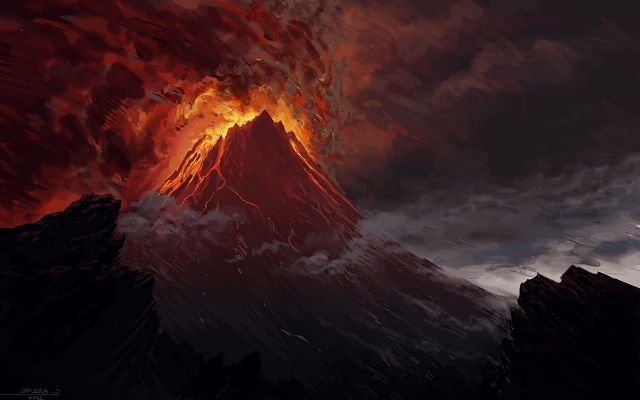

Mordor — a sötétség birodalma
Középfölde keleti vidékein, magas hegyek gyűrűjében terül el Mordor, a Sötét Nagyúr, Szauron birodalma. Ez a föld éles ellentéte a Megye zöld lankáinak vagy Völgyzugoly békéjének. Itt nem hallani madárdalt, nem nőnek virágok, és a nap fénye is vöröses árnyalatban törik át a füsttel teli égen.

A fekete föld tájai
Mordor nagy része kietlen, hamuval borított síkság. A föld repedezett, a levegő forró és száraz, a szél szúrós port sodor végig a pusztaságon. A távolban állandóan gomolyog a füst, amely a Végzet Hegyéből száll az ég felé.
A Végzet Hegy
A Végzet Hegy (Mount Doom) a Mordor közepén fekszik, és ahol Szauron a Végzet Gyűrűt készítette. A hegy tetején egy kőkép, amely a gyűrűt tartalmazza. A hegy szélén élők nem tudják, hogy mi történik a hegyen belül, de az emberek tudják, hogy a gyűrűt ott kell elpusztítani.
Élet Mordorban
Mordorban nincs valódi élet, csak szolgálat és rabság. Az orkok és más sötét lények Szauron akaratának engedelmeskednek. A földet kizsigerelik, a vizek szennyezettek, az ég állandóan borult. Ez a vidék maga a reménytelenség — de még itt is akad bátorság: Frodo és Sam végső útja Mordor sivatagos pusztáin át vezet a Végzet Hegyéhez.